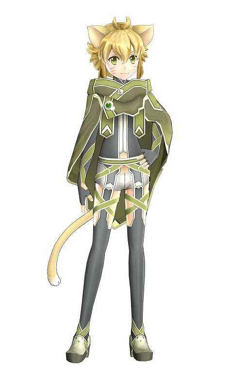

第四百三十八章 刀剑神域Caliber SS
“街上的气氛是不是有点不太对劲啊？”
少女一行人走在猫妖精城市的街道上，美羽看着街上人来人往的景象表示疑问，来往的人一个个都来去匆匆，脸上大都是表现的兴致勃勃的样子，气氛显得很火热的感觉。
“对哦，是要去打架吗？”优纪注意到很多人都拿出了一般在城市里会收起来的武器，摩拳擦掌的样子好像随时会干一架一样。
“应该是有大型任务吧，来往的风精灵有些多……”蓝子四处看了看，虽然风精灵和猫妖精因为领主的关系结为同盟，使得风精灵和猫妖精的关系很好，不过，目前猫妖精的城市里的风精灵的数量实在是太多了，并且，还能看见不少风精灵护卫队玩家。
溯夜领主在这边吗？
毕竟护卫队的职责的保护领主，一般是不会随便离开领地的。
“是要和火精灵进行领地战吗？”疾风看向菲特，如果是领地战的话，作为风精灵的菲特应该知道些什么。
火精灵就如同其名字一样，是火的化身，对于PK和团战的热情特别的高昂，虽然因为年初发生的事情，导致火精灵的人气大减，但是风之精灵王带来的热潮很快就消退了，大部分冲着美女精灵王而开风精灵小号的玩家也都回归了原本的阵营。
因为好战的本性，火精灵在ALO里一向是综合战斗力最高的种族，也因为格外好战的关系，和ALO里大部分种族都时有摩擦，特别是和人气第一的风精灵之间的关系特别的不好，时不时就要和风精灵打领地战。
风精灵的人气虽然受风之精灵王的影响是ALO里最高的，但是综合实力却很平庸，为了抵御火精灵的侵扰，风精灵和猫妖精结成了共同进退的盟友关系。
“我并没有收到通知。”菲特查看了下自己的邮箱后摇了摇头。
领地战是种族与种族之间的战争，在领地战开始前，领主会向除被驱逐外的所有同族玩家发起战争号角的。
“是年度任务哦。”
意外的声音响了起来，美羽转过头看向声音发出的方向，然后发出惊喜的声音。
“阿尔戈姐姐！”
出现在美羽眼中的是脸上挂着很好认的胡须涂鸦的同族猫妖精少女。
“哟，美羽酱，和朋友一起玩游戏吗？”
曾经被称为【鼠】的SAO最佳情报商人笑眯眯的对着美羽挥了挥手。
“嗯。”美羽点了点头，然后跑过去愉快的抱住阿尔戈，“好久不见，阿尔戈姐姐！”
“最近现实世界那边有点事呢，好久没有上线了。”阿尔戈歪着脑袋露出困扰的表情，想必现实那边有很多烦心事吧。
“您好，阿尔戈小姐，刚刚您说的年度任务是什么？”
蓝子向阿尔戈简单的打了下招呼后询问道，倒不是不知道年度任务的意思，好歹也已经玩这个游戏一年了，只是她不经常看官网论坛的公告，所以一些游戏里的最新消息她经常不太清楚。
“直接叫我阿尔戈就可以了。”阿尔戈耸了耸肩说道，“今天凌晨，世界树上的大鹫型NAMED Mob被击杀了，理所当然的，这不是玩家做的……”
“不是玩家？？”
“是一个叫做夏基‘Thjazi’【スィアチ】的NPC!就是约顿海姆最大那个城堡里的NPC大公。”
“咦？那不就是……”疾风掩着嘴露出惊讶的表情，虽然不经常逛论坛，但是偶尔也是有去看过，其中除了女神真爱贴之外，给疾风留下深刻印象的就是另一个复仇贴。
听说去年ALO里，亚尔夫海姆一度化为冰雪世界，央都阿伦毁于一旦，虽然这件事的经过很多玩家都不清楚，但是有一点很清楚，就是当初导致阿伦毁灭的白色立方建筑里存在很多人形邪神，而在那个建筑来到地面不久前，约顿海姆里的人型邪神也都消失不见了，很显然，那个毁灭央都的建筑就是人形邪神的大本营。
央都被毁灭，作为游戏的一环也并非是特别奇怪的事情，但是问题是，在这件事发生前，大部分玩家都从人形邪神这边的NPC手上领取了猎杀动物型邪神的任务，也就是说，他们当初是在给敌人打工！
更有甚之，有分析帝指出，兽型邪神和人形邪神应该是敌对立场，而正因为兽型邪神的存在，人形邪神才没有抵达亚尔夫海姆，而那时候他们帮助人形邪神消灭兽型邪神的行动，不仅仅是在资助恶势力，甚至还是在自掘坟墓，一手促成央都的毁灭！
也就是说，所有玩家都被NPC耍了！
疾风记得，那个NPC就是阿尔戈所说的那个约顿海姆最大那个城堡里的NPC大公。
“没错，就是去年耍了全部玩家的那个NPC。”阿尔戈点了点头，“他从世界树上盗取了金苹果，而我们的任务就是袭击人形邪神，从大公夏基手中夺回金苹果，并且在元旦前送往世界树根部城市央都阿伦，交给守护仙女伊登，而任务奖励，则是从夏基手中夺取的断钢圣剑。”
“也就是说，这个任务也是屠杀系的任务吗？”疾风皱了皱眉，老实说，她并不喜欢这类任务，而且，由于是近期才玩这个游戏的，所以对于去年玩家被NPC耍了的事情，她倒是没有啥感觉。
“没错，就是屠杀系任务，和去年一样是圣剑攻略的任务，只不过和去年的恰好相反，是反过来向人形邪神发起的复仇之战。”阿尔戈点了点头。
“既然去年是帮助了人形邪神，导致人型邪神登录亚尔夫海姆的话，今年的任务会不会导致兽型邪神登录亚尔夫海姆呢？”疾风歪着脑袋思索着。
“不会哦。”蓝子和优纪对视了一眼回答道，在大家的注意力都转移过来后，蓝子继续说道，“约顿海姆就是兽型邪神的故乡，而人形邪神则是从更下层上来的巨人，如果打败了人型邪神的话，结果应该只是人型邪神被驱逐，约顿海姆变回本来的样子而已。”
“原来如此，还有这个设定啊。”阿尔戈若有所思的点点头，拿出一个小本本记了一下后，看向蓝子继续问道，“约顿海姆本来的样子是指？”
“好像约顿海姆原本是四季如春的温暖世界。”蓝子回答道，虽然她没有见过，但是既然她们作为游戏运营方的姐姐曾经那么说过，那应该就是这样吧，而且，那位湖之女王当初也是向她们展示过幻象的。
……
【啊，本来想写漫画剧情的，最后还是原创剧情，很显然，是圣剑攻略任务，然而，既然去年已经玩过了这个任务，作为运营方，自然要更改下剧情重新安排。】